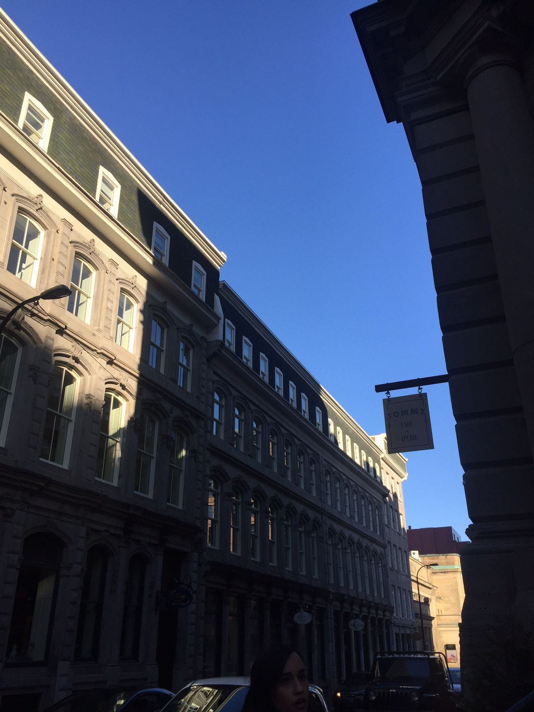

St. Paul Street
Saint-Paul Street es una calle adoquinada de 2 km de largo en el Viejo Montreal. Una de las calles más antiguas de la ciudad, es una calle muy comercial en la que puedes encontrar muchos restaurantes que sirven el plato más popular de Quebec: la poutine. Creada a fines de la década de 1950, la poutine es un plato sustancioso hecho con papas fritas, cuajada de queso y salsa marrón. Durante mucho tiempo considerado un plato de clase baja, ahora está tan de moda como puede ser y su popularidad se ha extendido por todo Canadá e incluso en el norte de los EE. UU. La poutine es genial regada con una cerveza fría.
